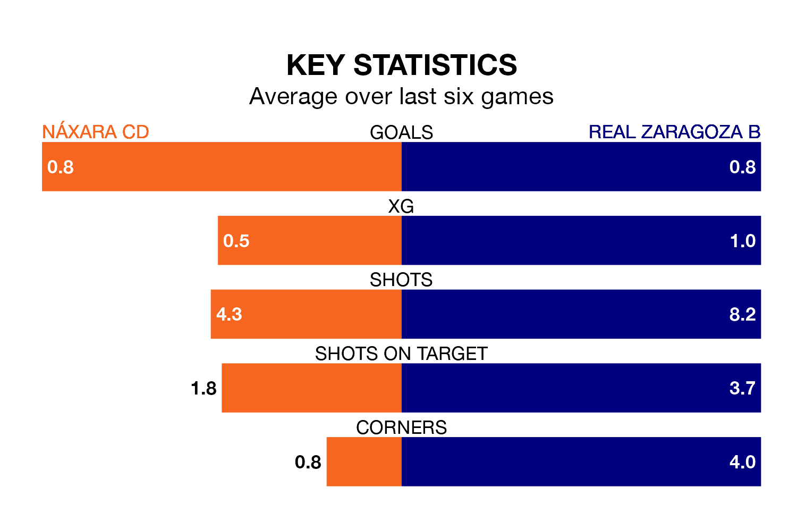

Náxara CD are on a poor run ahead of hosting Real Zaragoza B on Sunday, with just three points collected from their last six games.
Náxara CD have picked up just one win in their last six Segunda División RFEF Group 2 games, and face a Zaragoza B side whose last six games have brought three wins and two draws.
Náxara CD are bottom of the table after 18 games, of which they have won two and drawn two, earning eight points.
Zaragoza B are 12 places ahead of the hosts in sixth, with eight wins and six draws putting them on 30 points.
With 12 goals in 18 games so far this season, Náxara CD are scoring at below the league average rate with 0.7 goals per game. And they are conceding more than average, letting in 33 goals at a rate of 1.8 per game.
The away side, meanwhile, are average scorers, with 1.1 goals per game. They have conceded 0.6 goals per game.
Náxara CD's last match was on January 14, a 5-1 loss against Deportivo Alaves B.
Zaragoza B drew 0-0 with CD Tudelano last time out, also on January 14.
Updated: 14:53 (UTC), 16/01/24